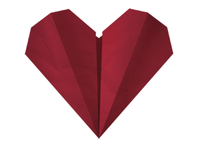

Наука и образование
В числе приоритетов нашей деятельности – создание возможностей для интеллектуального развития и совершенствования человека.
Мы планируем развивать инновационные образовательные и учебные программы, помогать в комплектовании учебных заведений, а также поддерживать и создавать новые гранты и конкурсы в сфере образования
Социальная сфера
Мы планируем активно содействовать решению проблем социального сиротства, организовывать и поддерживать проекты, которые будут оказывать материальную, медицинскую и социально-психологическую помощь детям-сиротам и детям, оставшимся без попечения родителей. Одним словом, будем стараться делать более счастливыми детей, нуждающихся в поддержке.